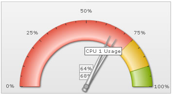

| Real-time support | ||||||||||||
The angular gauge is a real time chart, which can continuously request new data from the server and display the same, without involving any page refreshes. You can specify the URL of the data provider and the time interval (in seconds), after which the gauge will look for new data. The data provider page needs to be a page at your server-side, which when invoked by angular gauge, will output the new data in the format explained below. |
||||||||||||
| Real-time data format | ||||||||||||
The real-time data format for angular gauge depends on:
Let's quickly see examples of each one of them. |
||||||||||||
| Simple Example | ||||||||||||
In the simplest form, if you're looking to update the value of a gauge, you need to output the data in following format: &value=34 Here, the output is a single value, 34. So, when FusionWidgets will read this value, it will update the chart by setting its value to 34 (if the data is within range). |
||||||||||||
| Updating multiple pointers | ||||||||||||
If you've multiple dials defined, you can update them all in a single update as shown in the following output from real-time data provider page: &value=34|25|54 Here, we're specifying three values in the real-time update. So, assuming that we've 3 dials or pointers defined in the chart, each one of them will take the sequential value and update itself. That is, the first dial will now show 34, second one will show 25 and the third one 54. The sequence of dial is determined by its order in XML/JSON data. |
||||||||||||
| Updating using named ID of the dial/pointer | ||||||||||||
FusionWidgets also allows you define the ID for each dial or pointer as under: In angular gauge: <dial id='CPU1Temp' ..../> <dial id='CPU2Temp' ..../> You can now update each of these named dial as shown in the following output in your real-time data stream: &CPU1Temp=23&CPU2Temp=34 This will change the value of dial 1 (with id as CPU1Temp) to 23 and dial 2 to 34. |
||||||||||||
| Stopping real-time updates from server | ||||||||||||
If you wish to stop the chart from polling the server for any more real-time updates, you can send the following command from server to do so: &stopUpdate=1 After stopping the update, it can be restarted either using user interaction (right click context menu) or using client-side JavaScript. |
||||||||||||
| Sending messages pertinent to Message logger | ||||||||||||
| The gauge can show message logger like data streaming charts. There are various parameters which you can specify for message logger. All of them have been explained in the Message Logger section. | ||||||||||||
| Creating the real-time gauge | ||||||||||||
To create any real-time gauge, you'll need to assimilate the following things:
We're already familiar with XML for the chart. The new attributes that need to be added for real-time update are: |
||||||||||||
|
||||||||||||
Shown below is an example chart XML: |
||||||||||||
<chart lowerLimit="0" upperLimit="100" gaugeStartAngle="180" gaugeEndAngle="0" palette="1" numberSuffix="%" tickValueDistance="20" showValue="1" decimals="0" dataStreamURL="CPUData.asp" refreshInterval="3"> {
"chart": {
"lowerlimit": "0",
"upperlimit": "100",
"gaugestartangle": "180",
"gaugeendangle": "0",
"palette": "1",
"numbersuffix": "%",
"tickvaluedistance": "20",
"showvalue": "1",
"decimals": "0",
"datastreamurl": "CPUData.asp",
"refreshinterval": "3"
},
"colorrange": {
"color": [
{
"minvalue": "0",
"maxvalue": "75",
"code": "FF654F"
},
{
"minvalue": "75",
"maxvalue": "90",
"code": "F6BD0F"
},
{
"minvalue": "90",
"maxvalue": "100",
"code": "8BBA00"
}
]
},
"dials": {
"dial": [
{
"id": "CPU1",
"value": "92",
"rearextension": "10",
"tooltext": "CPU 1 Usage"
},
{
"id": "CPU2",
"value": "43",
"rearextension": "10",
"tooltext": "CPU 2 Usage"
}
]
},
"styles": {
"definition": [
{
"type": "font",
"name": "myValueFont",
"bgcolor": "F1f1f1",
"bordercolor": "999999"
}
],
"application": [
{
"toobject": "Value",
"styles": "myValueFont"
}
]
}
} |
||||||||||||
Here, we've set dataStreamURL='CPUData.asp' refreshInterval='3', which tells the chart to poll new data from CPUData.asp every 3 seconds. For the sake of demo, CPUData.asp returns 2 random values within 100% in the format: &value=84|14 It can also return data in the following format, as we've defined the IDs for both dials: &CPU1=23&CPU2=43 When you run this chart, you'll see something as under, with both dials updating their value every 3 seconds: |
||||||||||||
|  | ||||||||||||
| Troubleshooting | ||||||||||||
|